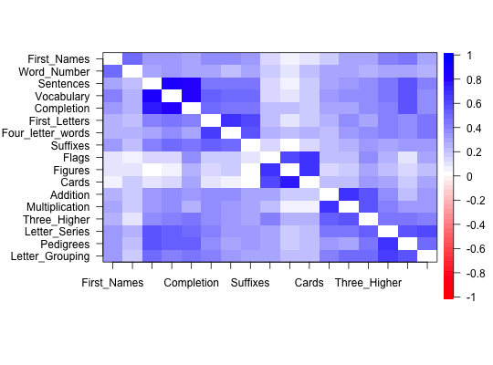
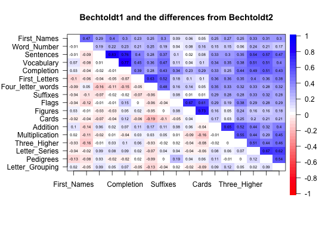

When reporting correlation matrices for two samples (e.g., males and females), it is convenient to show them as one matrix, with entries below the diagonal representing one matrix, and entries above the diagonal the other matrix. It is also useful to compare a correlation matrix with the residuals from a fitted (e.g., factor) model.
lowerUpper(lower, upper=NULL, diff=FALSE)
| lower | A square matrix |
|---|---|
| upper | A square matrix of the same size as the first (if omitted, then the matrix is converted to two symmetric matrices). |
| diff | Find the difference between the first and second matrix and put the results in the above the diagonal entries. |
If just one matrix is provided (i.e., upper is missing), it is decomposed into two square matrices, one equal to the lower off diagonal entries, the other to the upper off diagonal entries. In the normal case two symmetric matrices are provided and combined into one non-symmetric matrix with the lower off diagonals representing the lower matrix and the upper off diagonals representing the upper matrix.
If diff is true, the upper off diagonal matrix reflects the differences between the two matrices.
Either one matrix or a list of two
read.clipboard.lower, cor.plot
diff12 <- lowerUpper(b1,b2,diff=TRUE) cor.plot(t(diff12),numbers=TRUE,main="Bechtoldt1 and the differences from Bechtoldt2")